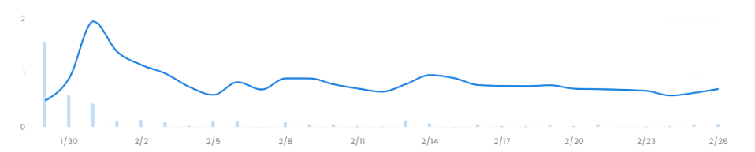
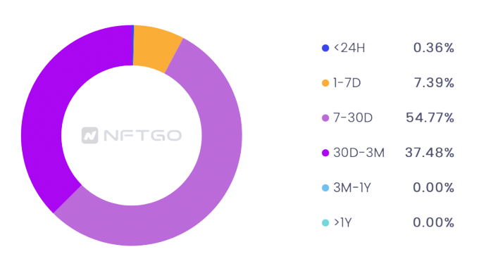

每週走勢 Vol.03
Scavengers是一個Alpha社群項目，一共發行555個NFT，主要會在Discord群組提供不同NFT 項目資訊、白名單抽獎機會，以及一些收集資訊的程式工具
購買NFT主要利益:
獲得進入Discord抽獎及討論的機會 獲得項目方提供搜集資訊的程式碼
- 特定項目交易追蹤
- 特定地址買賣進出
- 特定推特帳號發推
- 新項目公售日期
項目方:
- Laywhite (行銷負責人)
- Banbit (社群管理員)
- Dex (Developer)
觀點看法:
Scavengers是以Alpha群為目標在努力的NFT項目方，群組內有許多其他藍籌項目(ex. Fomo Dog、Laser Cat、Godjira等)的大神們， 時常會提供NFT新項目的資訊及分享自己的觀點， 整體來說，算是一個藍籌的衛星項目方，價格相較而言也是親民許多，適合想更加了解NFT 社群與資訊， 但又不想花太多錢的投資人購買。 此外，可以看到項目方是有心在經營社群及整體項目的，包括在最近提供的新工具Flippr， 對於投資人在收集資訊應會有所幫助。而消息傳出的當下即可看到Scavengers在Opensea的售 價迅速竄升，顯示市場對此一訊息是以正面態度看待。
特殊工具 - Flippr:
Flippr是一款Chrome的附件工具，將幫助Scavengers的持有者提升NFT瀏覽和購買體驗。
主要功能如下:
**Flippr Guard**:
透過用戶之間互相的通報，Flippr Guard將建立一個廣泛的詐騙項目數據庫，Flippr在瀏覽器 加載網頁之前跳出通知，提醒用戶注意此為不可靠的項目。
**Snipe Notifications**:
「不再錯過任何關鍵時刻」。Flippr幫助用戶為他們最喜歡的 OpenSea項目設定通知。用戶 可以選擇監控底價(當它高於或低於某個價格時通知)、數量(達到頂或底)和新上市(低 於底價或具有特定特徵)。用戶將在事件發生後的幾秒鐘內收到通知，不再錯過任何大好機會。
**Portfolio Tracker**:
協助用戶監控自己NFT整體資產價值的變化，此外，未來也將可以追蹤其他人錢包的狀況，並且在他人買進或賣出時發出通知訊號。
**OpenSea Analytics**:
將提供比Opensea上更深的分析數據予用戶參考。從每日、每周和每月的銷量/銷售額/地板價 數據，到版稅和合約地址，都將是Flippr提供的資訊。
除了上述功能外，以下的⼯具將不會在本次的發佈中亮相，但⽬前正緊鑼密鼓的發展中。
**OpenSea Rarity Integration & Sniper**:
Flippr建立了一個以NFT特色為分類的稀有度排名工具，並將顯示底價和交易歷史的一些特 定統計數據。
白名單價值計算:
在價值計算上，撇除社群討論及程式工具帶來的價值，單純就抽白名單一事進行分析。在 Scavengers社群中， 幾乎每天都有一次的抽白名單機會，而每次平均約抽15個帳號 ，抽中的 機率約為3%(15/500)，而每筆白名單平均可以賺得0.1 eth，以持有一年來看，期望價值約 為1.095 eth/年。
價格歷史、持有者:
 